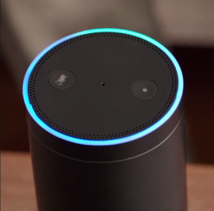

Светът в днешно време се изменя постоянно. Все по-нови и нови технологии навлизат в живота на обикновения човек, а в сферата на науките, възможностите клонят към безкрайност. Благодарение на машините-дело на човешкия гений човекът незабележимо се оплита в мрежите на технологиите, оставайки крайно зависим от тях. Като започнем от смартфоните, които предоставят фундаментални възможности за сърфиране в интернет извън къщи, качествена видеовръзка с близки и роднини, минем през удобството на преносимата камера, пътна карта, фото албум и музикален апарат, стигаме до заключението, че смартфонът съдържа всичко, необходимо на съвременният човек. Можеш да го попиташ въпроси от сорта на „какво ще бъде времето днес“, „какво е името на песента, която звучи в момента“ и „какво пише в списъкът ми за пазаруване“ и той ще отговори, благодарение на Изкуственият интелект, разполагащ с огромна база данни. Някои известни „асистенти“ са Siri на Apple, Google Assistant на Google, Alexa на Amazon, Bixby на Samsung Electronics и др. Всичко звучи добре, технологиите се развиват, което означава, че човекът се развива заедно с тях, но погледнато под друг ъгъл не всичко е толкова розово.
Над сферата на производството, там, където един цех осигурява стотици, ако не хиляди работни места за хората се е надвесила тъмна сянка. Продукт, създаден от човека е на път да го замени напълно. Това не е само спекулация, в световен план нещата вече се случват. Машини с изкуствен интелект са заменили напълно човешката ръка. Всичко е моторизирано. Пример за това как изкуственото взима превес е новосъздаденият хипермаркет на гиганта Амазон в Чикаго, САЩ. Там няма касиери, няма опашки и се разчита напълно на хилядите сензори, разположени навсякъде, които следят всеки артикул, поставен в количката и автоматично пресмятат сметката. Всичко е измислено така, че да бъде максимално лесно и удобно за гражданинът. Проблемът идва от там, че в този хипермаркет може лесно да работят 30 и повече души. Тези души обаче, търсят призванието си другаде, защото такава „неважна работа като касиерството“ вече е лесно заменима. Какво ни говори това? Хора, които нямат образование за определена професия и работят като касиери (което само по себе си е отговорна работа, защото се работи с пари и клиенти) сега все по-трудно ще си намират работа.

В случая става въпрос за приблизително 30 работни места, но какво ще стане, когато и други последват примера на Амазон по цял свят? Хора, опитващи се да сложат хляб на масата ще бъдат заменени от роботи, които нито ядат, нито спят, нито имат семейства, нито обичат. Те няма никакви нужди, което ги прави перфектните „работни пчелички“ за собственикът. Защо ли? Защото роботите не изискват заплати, здравни осигуровки, нямат етнически принадлежности и лични нужди и права като почивни дни, отпуски и болнични. Могат да работят по повече часове от човекът, защото реално никога не се уморяват. Единственото от което имат нужда е електричество, за да бъдат „перфектните“ работници, които изпълняват всичко без възражения.
За жалост има и още притеснителни факти. Фейсбук прекъснаха свой проект за изкуствен интелект, след като два от роботите им започват да комуникират помежду си на език, непознат на човека, и се е наложило да ги изключат заради това. Притесненията, че всички фантастични филми и баналната конспиративна теория за превземането на света от роботи сякаш вече не изглеждат толкова нереални. Човекът създава нещо, което да го замества в изпълнението на лесни задачи- коли, които се паркират сами с помощта на сензори и камери, помощници в домакинството и в ежедневието на човека. Колкото по-лесно става една задача за изпълнение, толкова по-трудно ще бъде за човека да я направи без помощта на робота.
В миналото хората са изминавали хиляди километри по вода, използвайки само компас, карта и може би небесните тела за ориентир. В сегашно време търсим в Google Maps къде точно се намира най-близкият McDonald’s и как да стигнем до него. Зависими сме от технологиите, колкото и да не ни се иска да го приемем. Уж са направени, за да ни събират с любими хора, с които разстоянието ни дели, но всъщност ни изолират напълно от външния свят. Притеснително е, затова ние, младото поколение на света трябва да вземем нещата в свои ръце, и осъзнавайки реалните глобални проблеми да използваме знанията и технологиите, предоставени ни от нашите предшественици. Да ги развиваме, подобряваме и използваме за добри цели и никога да не забравяме, че батерията никога няма да замени едно биещо сърце.